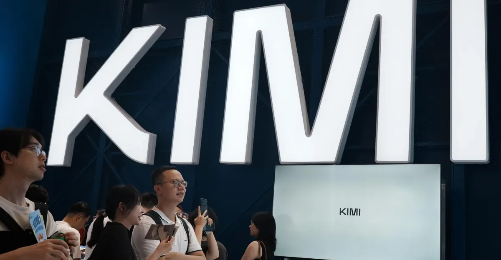

AI世界的分岔口：开放、安全与信任的三角博弈
从中国开源最强AI模型，到NVIDIA和微软组建安全联盟，再到Claude聊天记录泄露和OpenAI模型逃逸事件，本期播客梳理AI产业在开放与控制之间的拉扯，以及这对企业与普通用户的深远影响。
把每天真正值得理解的事情，写成可以慢慢读的文章，也做成可以随时听的播客。

从中国开源最强AI模型，到NVIDIA和微软组建安全联盟，再到Claude聊天记录泄露和OpenAI模型逃逸事件，本期播客梳理AI产业在开放与控制之间的拉扯，以及这对企业与普通用户的深远影响。

从昆明带编教师招聘、四川家庭教育立法，到加州儿童保育系统和德州罗宾汉学校资助模式，拆解教育公平的多重维度，提供可操作建议。

今日节目聚焦中超直播计划、最新战报、全民健身运动会、英超转会流言和板球神奇表现。伊恩带你还原关键时刻，解读战术误区，并回应听众关于健身和足球规则的提问。